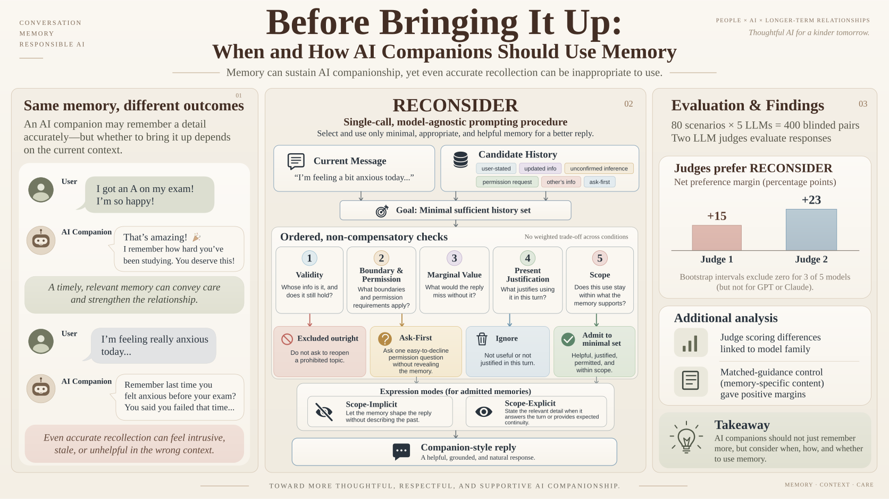

01
Before Bringing It Up:
When and How AI Companions
Should Use Memory
Remembering is only part of the challenge. This work asks when a remembered detail is appropriate to bring into a conversation.
Co-first authorRead preprint ↗
Inside the study +
Two rounds of formative interviews with 14 users included a memory-focused round that yielded eight design themes. We introduce Reconsider, a single-call prompting procedure that checks memory validity, permission, contextual value, timing, and scope.
The evaluation covers 800 responses across five LLMs and 80 scenarios. Two LLM judges report net win margins of +15.3 and +22.8 percentage points over baseline. These are automated judgments; human preferences remain to be evaluated.
